Three scenes, two photos each, taken on my phone. I turned to the right between shots, lining things up with the rule-of-thirds grid so the photos overlap by about two thirds.
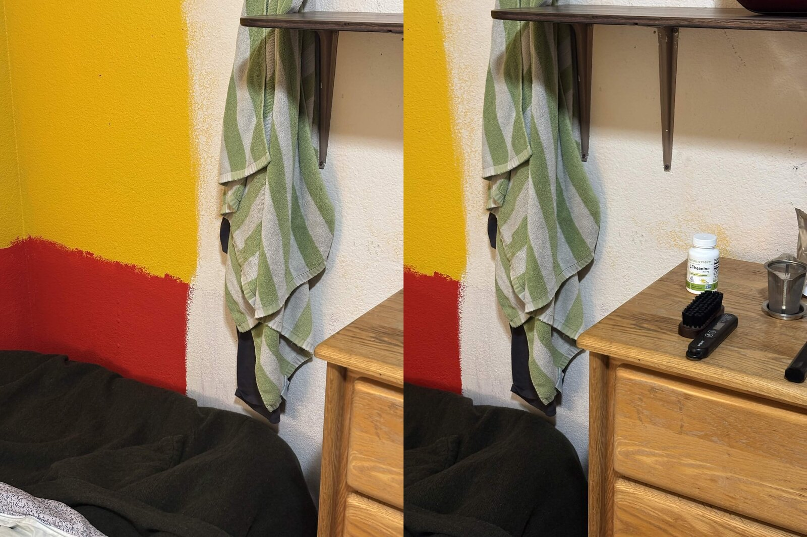
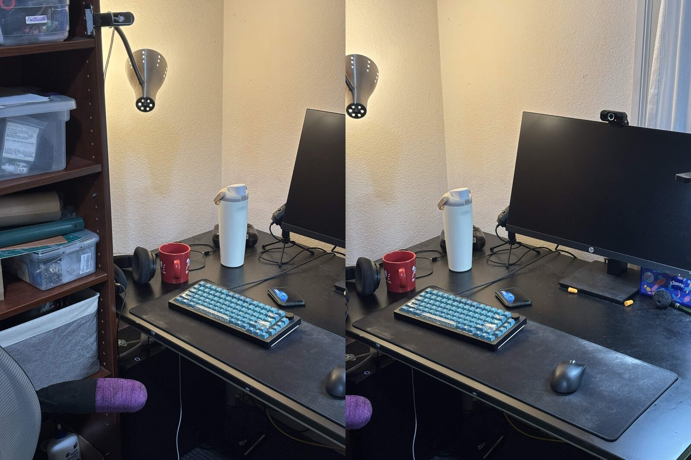
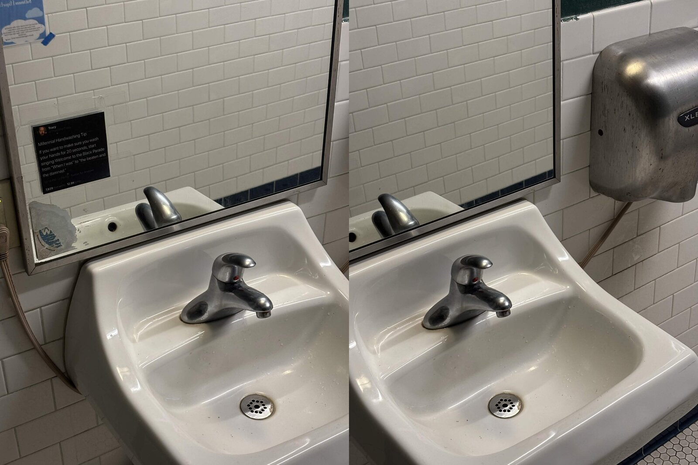
A homography only maps one photo onto another exactly if the camera rotates about its center of projection (or the scene is flat). I turned my whole body instead of rotating the phone in place, so the camera also moved a little. That adds a bit of parallax: things at different depths shift by different amounts between the two shots, and no single homography can line all of them up.
A homography maps a point p = (x, y) in one image to p' = (x', y') in the other. In homogeneous coordinates it's a 3×3 matrix, with the bottom-right entry fixed to 1 since scaling H doesn't change the mapping:
[w x'] [a b c] [x]
[w y'] = [d e f] [y]
[w ] [g h 1] [1]Dividing by w gives the actual point:
x' = (a x + b y + c) / (g x + h y + 1)
y' = (d x + e y + f) / (g x + h y + 1)Multiplying through by the denominator makes each equation linear in the 8 unknowns, so each correspondence gives two rows of a system A h = b:
[x y 1 0 0 0 -x x' -y x'] [a b c d e f g h]ᵀ = x'
[0 0 0 x y 1 -x y' -y y'] [a b c d e f g h]ᵀ = y'Four correspondences give exactly 8 equations, but then any clicking error goes straight into H. I clicked 10 per scene and solved the overdetermined system with least squares.
def build_system(im1_pts, im2_pts):
"""Linear system A h = b for the 8 unknowns of H (with H[2, 2] = 1).
Each correspondence (x, y) -> (x', y') contributes two rows:
[x y 1 0 0 0 -x x' -y x'] h = x'
[0 0 0 x y 1 -x y' -y y'] h = y'
"""
n = len(im1_pts)
A = np.zeros((2 * n, 8))
b = np.zeros(2 * n)
for i, ((x, y), (xp, yp)) in enumerate(zip(im1_pts, im2_pts)):
A[2 * i] = [x, y, 1, 0, 0, 0, -x * xp, -y * xp]
A[2 * i + 1] = [0, 0, 0, x, y, 1, -x * yp, -y * yp]
b[2 * i] = xp
b[2 * i + 1] = yp
return A, b
def computeH(im1_pts, im2_pts):
"""Homography H (3x3) with [x', y', 1] ~ H [x, y, 1] mapping im1_pts to im2_pts.
Solved by least squares for n >= 4 correspondences.
"""
A, b = build_system(im1_pts, im2_pts)
h, *_ = np.linalg.lstsq(A, b, rcond=None)
return np.append(h, 1).reshape(3, 3)Correspondences (each H maps the right photo onto the left one):
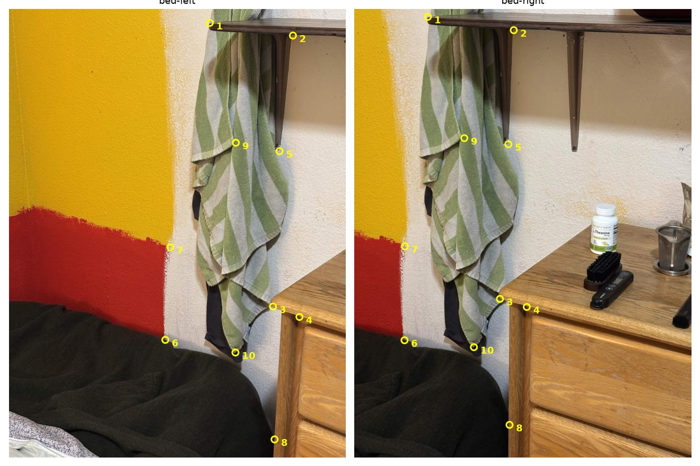
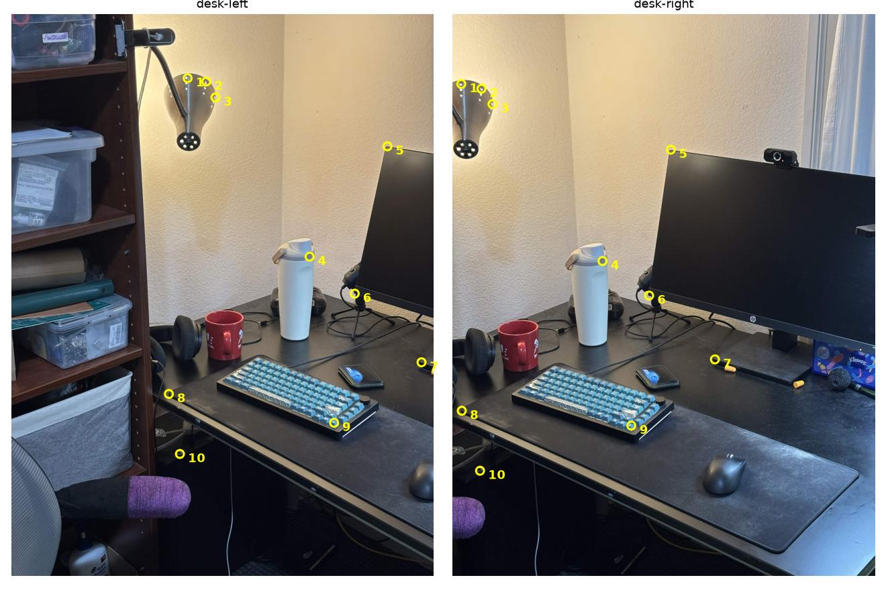
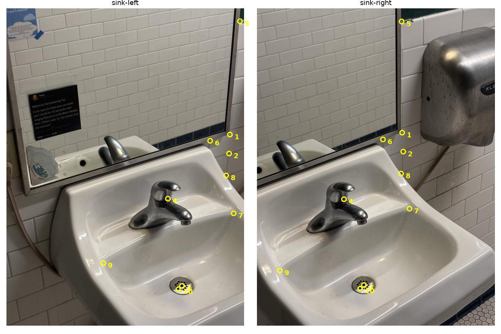
Recovered homographies:
Bed:
[[ 0.924183 -0.065905 801.080905]
[ -0.011322 0.925955 53.361407]
[ -0.000047 -0.000016 1. ]]
Desk:
[[ 0.881873 -0.066367 882.633323]
[ -0.000964 0.947305 -14.365817]
[ -0.000043 -0.000008 1. ]]
Sink:
[[ 0.845064 -0.067896 857.565355]
[ -0.030907 0.949114 34.377643]
[ -0.000053 -0. 1. ]]All three are close to a shift of about 800 to 880 pixels to the right (the c entry), plus a small perspective term (g and h) from turning the camera.
Both warps are inverse warps. First I find where the output goes by sending the input's four corners through H and taking their bounding box. Then, for every pixel in that box, I apply H−1 to find where it comes from in the input, and sample the input there. Going backward like this means every output pixel gets a value, so there are no holes. Output pixels that land outside the input get alpha 0.
I treat integer coordinates as pixel centers, so (0, 0) is the center of the top-left pixel. The two methods only differ in how they sample at a non-integer source point (x, y):
def _inverse_coords(H, bounds):
"""Source-image coordinates for every pixel of the output box `bounds`."""
x0, y0, x1, y1 = bounds
xs, ys = np.meshgrid(np.arange(x0, x1 + 1), np.arange(y0, y1 + 1))
p = np.stack([xs.ravel(), ys.ravel(), np.ones(xs.size)])
q = np.linalg.inv(H) @ p
sx = (q[0] / q[2]).reshape(xs.shape)
sy = (q[1] / q[2]).reshape(xs.shape)
return sx, sy
def warpImageNearestNeighbor(im, H, bounds=None):
if bounds is None:
bounds = warped_bounds(im.shape, H)
h, w = im.shape[:2]
sx, sy = _inverse_coords(H, bounds)
ix, iy = np.round(sx).astype(int), np.round(sy).astype(int)
valid = (ix >= 0) & (ix < w) & (iy >= 0) & (iy < h)
out = np.zeros(sx.shape + im.shape[2:], dtype=im.dtype)
out[valid] = im[iy[valid], ix[valid]]
return out, valid.astype(np.float32), bounds[:2]
def warpImageBilinear(im, H, bounds=None):
if bounds is None:
bounds = warped_bounds(im.shape, H)
h, w = im.shape[:2]
sx, sy = _inverse_coords(H, bounds)
valid = (sx >= 0) & (sx <= w - 1) & (sy >= 0) & (sy <= h - 1)
sx, sy = sx[valid], sy[valid]
# Clamp the top-left neighbor so that points on the last row/column still
# have a neighbor to their right/below (with weight 0).
x0 = np.minimum(np.floor(sx).astype(int), w - 2)
y0 = np.minimum(np.floor(sy).astype(int), h - 2)
fx, fy = sx - x0, sy - y0
if im.ndim == 3:
fx, fy = fx[:, None], fy[:, None]
imf = im.astype(np.float32)
top = (1 - fx) * imf[y0, x0] + fx * imf[y0, x0 + 1]
bot = (1 - fx) * imf[y0 + 1, x0] + fx * imf[y0 + 1, x0 + 1]
out = np.zeros(valid.shape + im.shape[2:], dtype=np.float32)
out[valid] = (1 - fy) * top + fy * bot
return out.astype(im.dtype), valid.astype(np.float32), bounds[:2]To test the warps, I clicked the four corners of a rectangular object photographed at an angle and computed the homography that sends them to an upright rectangle with the object's real proportions.
Mat (2 : 1)
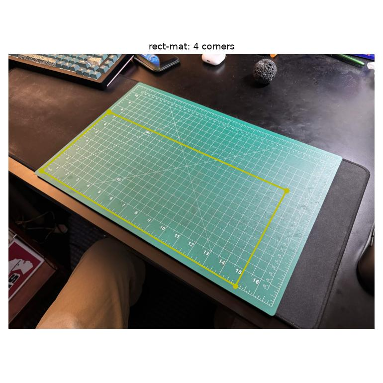
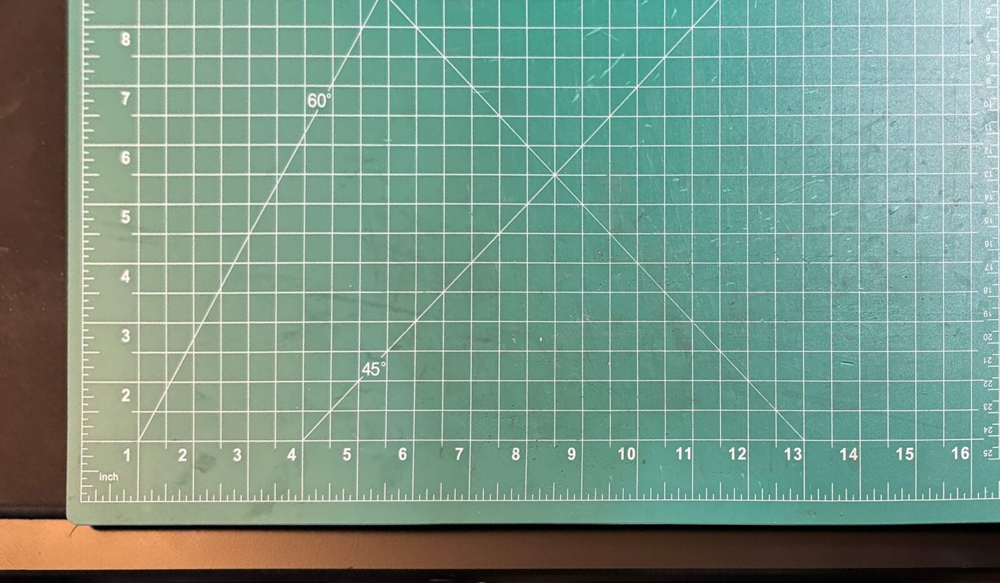
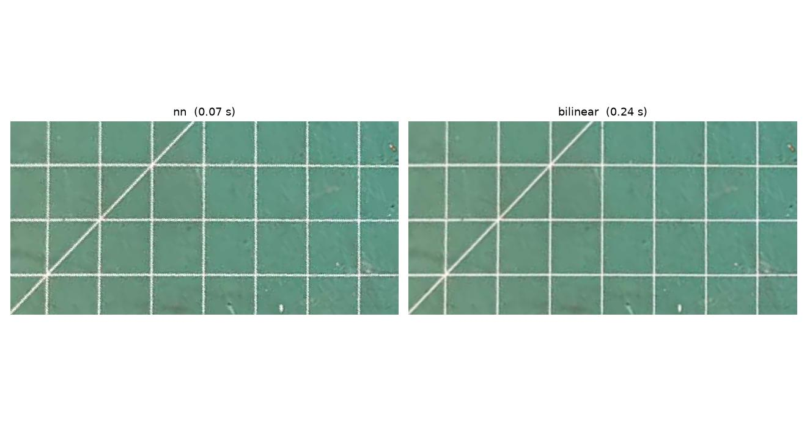
Sheet music (letter size, 8.5 × 11 in)
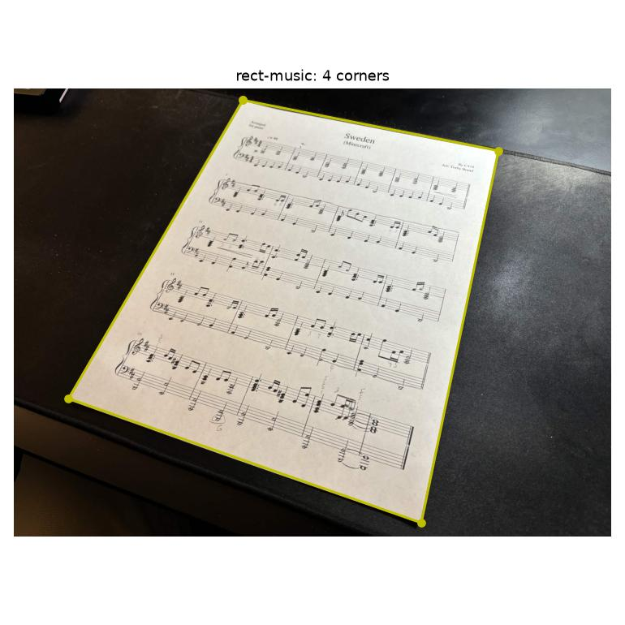
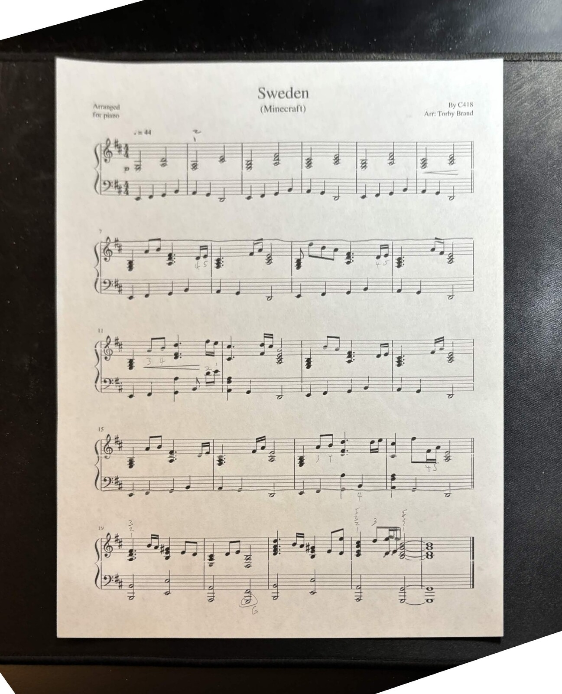
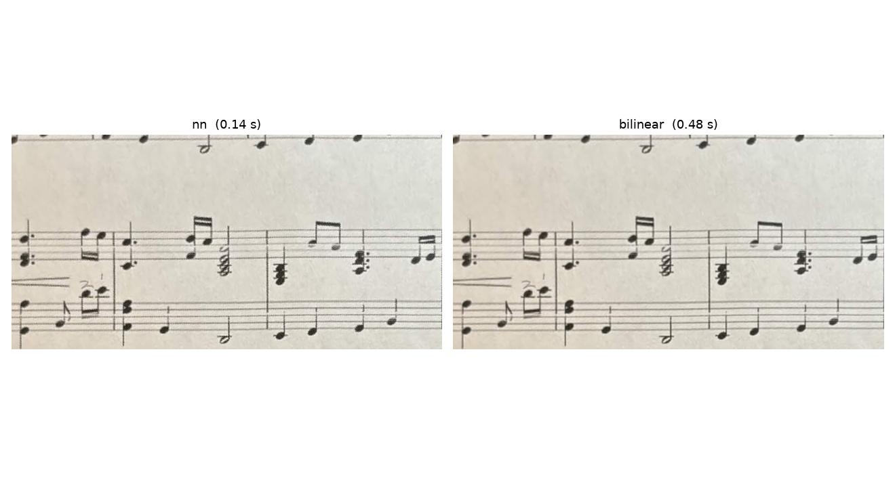
| Image | Output size | Nearest neighbor | Bilinear |
|---|---|---|---|
| Mat | 1981 × 1156 | 0.07 s | 0.24 s |
| Sheet music | 1922 × 2371 | 0.14 s | 0.48 s |
Bilinear is about 3.5× slower: it reads four pixels per output pixel and does several multiplications, where nearest neighbor reads one. In return it looks better. Nearest neighbor gives jagged, stair-stepped edges because neighboring output pixels jump between whole source pixels, while bilinear gives smooth edges that are slightly softer. At these sizes both take well under a second, so I used bilinear for the mosaics.
I kept the left photo unwarped and warped the right photo into its plane with the H from A.2. Both go onto one canvas sized to the union of their bounding boxes: the left photo's own box, and the right photo's warped corners. Each image has an alpha mask that is 1 where it has pixels.
Simply pasting one image over the other leaves a visible edge, so I blended them with weights. Each image's weight at a pixel is its distance to the nearest pixel outside that image (a distance transform). It is 0 on the image's border and grows toward its center, so each image fades out toward its own edges. Plain weighted averaging (Σ wi Ii / Σ wi) evens out the exposure difference between the photos, but wherever they are slightly misaligned it averages two offset copies of the same edge, which ghosts.
So I used a 2-level Laplacian pyramid:
The mosaic is the sum of the two.
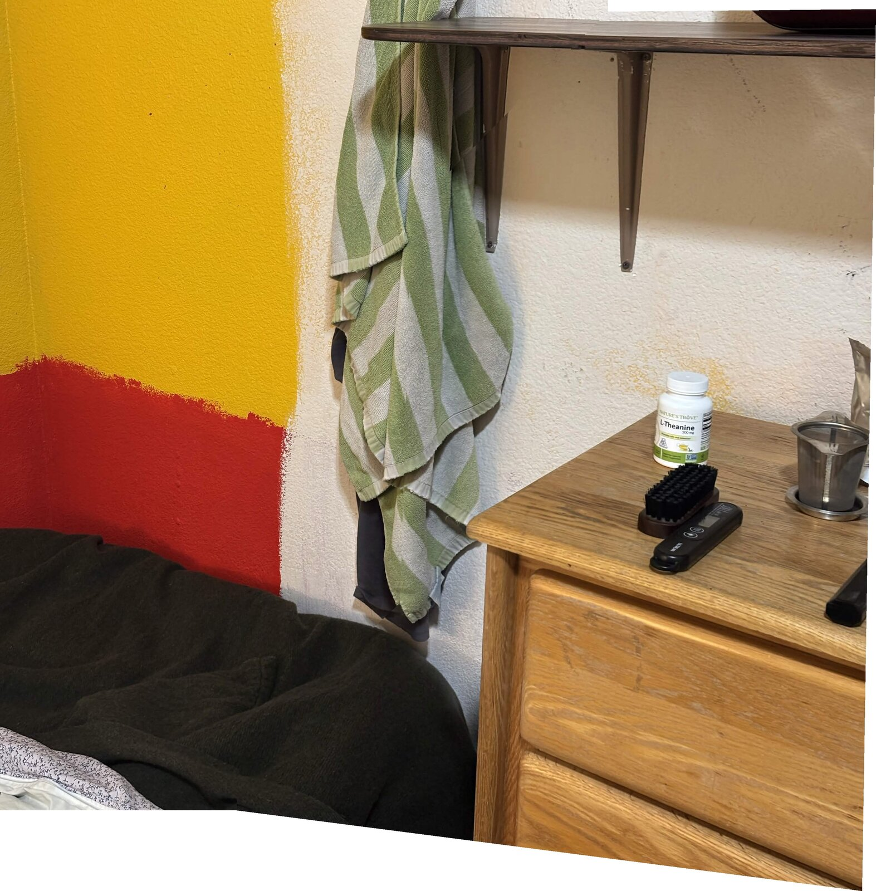
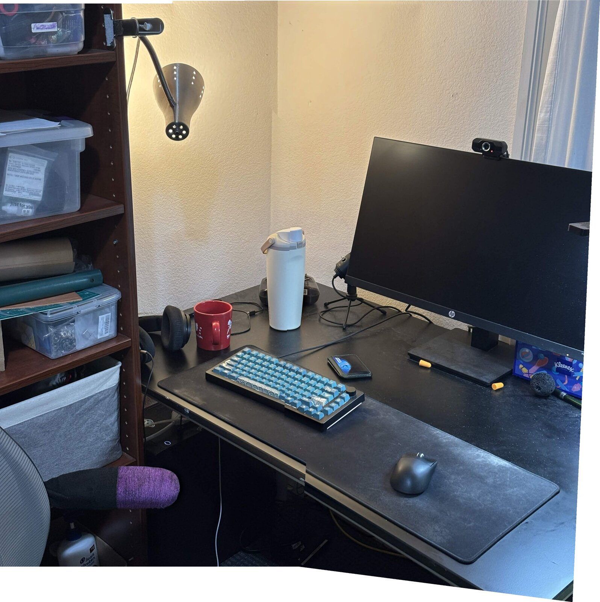
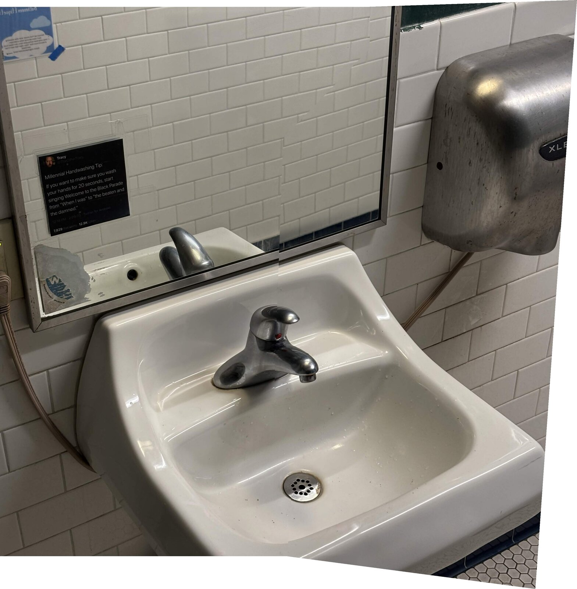
Limitations. The mosaics aren't perfectly aligned, for two reasons. My clicks weren't pixel-precise, and, as noted in A.1, I turned my body instead of rotating the phone in place, so there's some parallax. One way to see this is to map each clicked right-photo point through H and measure how far it lands from its clicked partner in the left photo:
| Scene | Mean | Max |
|---|---|---|
| Bed | 16.0 px | 29.8 px |
| Desk | 7.1 px | 14.5 px |
| Sink | 7.7 px | 15.0 px |
With perfect clicks and a pure rotation these would all be near 0. Least squares finds the H that fits all the points best, so the leftover error ends up as small misalignments in the overlap.
The Laplacian blend looks better than plain feathering, since it avoids the ghosting, but a slight seam is still visible. Taking the high frequencies from one image or the other means there is a line where the source switches, and wherever the images are misaligned, the detail on either side of that line doesn't quite match up. Blending can only hide misalignment, not fix it.